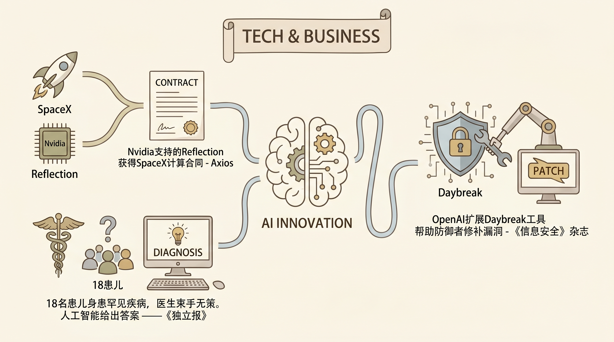

Nvidia支持的Reflection AI与SpaceX签署计算协议，获得Colossus 2数据中心芯片及硬件，总价值数亿美元。
两克伴AIGC日报
2026-06-24 星期三

本期关注：Nvidia支持的Reflection获得SpaceX计算合同 - Axios、18名患儿身患罕见疾病，医生束手无策。人工智能给出答案 —— 《独立报》、OpenAI扩展Daybreak工具帮助防御者修补漏洞 - 《信息安全》杂志、企业如何打造可信赖的专业AI
📰 行业动态
OpenAI o3模型成功帮助Boston医院诊断18名儿童的罕见疾病，AI医学诊断取得重大突破。
OpenAI扩展Daybreak网络防御计划，将安全工作的最难环节从“发现漏洞”转向“验证补丁”。
🔥 今日焦点
企业AI应用正在进入第二阶段。NVIDIA最新博客指出，第一波企业AI浪潮主要解决"能不能用"的问题，而现在企业开始关注"怎么用得专业、用得信任"。相比通用大模型，企业更需要在特定工作流程中嵌入可靠、可定制的AI能力。NVIDIA推出了包含开源模型、工具链和安全运行环境的Agent Toolkit，帮助企业快速构建专属的AI代理系统。这意味着AI落地正在从"尝鲜"走向"深度整合"，对于那些真正想把AI变成生产力的公司来说，这波工具链的成熟可能比某个新模型发布更具实际意义。
📚 深度长文
在2022年卡塔尔世界杯阿根廷对阵法国的决赛加时赛中，仅剩12分钟时，裁判面临一次关键判罚决定。作者Emiko Pope通过对该瞬间的细致复盘，阐释了人类裁判在极限压力下的认知负荷与AI辅助系统在高速决策中的互补潜力。文章指出，传统VAR虽提供回放，但实时情境判断仍依赖裁判的经验与直觉；而最新基于计算机视觉的自动判别模型，能够在毫秒级捕捉越位、手球等细节，从而减轻裁判的认知负担并提升判罚一致性。通过对比历史数据、赛后访谈与模型输出，作者进一步分析了技术介入对比赛节奏、球员心理及观众体验的多维影响。阅读价值在于：1）提供了AI在足球裁判场景中的最新实践案例；2）揭示了人类‑AI协同决策的伦理与效率平衡点；3）为AI从业者展示了真实高并发、噪声环境下模型部署的挑战与调优思路。
---
《Super Mario is mathier than you think》提出一个颠覆常规认知的论点：任天堂经典平台游戏《超级马里奥》蕴含的数学深度远超大众想象。作者通过多维度的案例，揭示游戏机制背后可形式化的数学结构。首先，马里奥的跳跃轨迹遵循抛物线方程，运动学模型可以抽象为微分方程；其次，关卡的布局被映射为图论中的有向加权图，玩家在不同分支间的路径选择等价于在图中寻找最短或最优路径；第三，游戏中的敌人行为、道具生成以及关卡随机性分别对应有限状态机、概率分布以及随机过程，使得游戏本身成为一个可计算的复杂系统。更进一步，作者指出若将“通关”这一目标形式化为优化或搜索问题，关卡设计往往涉及NP完全甚至更高计算难度的子问题，如路径覆盖、物品收集顺序等，这些特性为强化学习、生成式对抗网络以及程序化关卡生成提供了天然的实验平台。阅读本文的价值在于，它为AI从业者提供了从娱乐产品中提炼理论模型的视角，帮助理解游戏AI、自动化关卡生成和智能体规划等前沿技术的数学根基，并通过实际案例展示了抽象数学在实际系统中的落地路径。
📄 重点论文
**核心贡献**: 提出了EnterpriseClawBench，一个从真实企业工作场景中构建的AI Agent基准测试。包含852个可复现的任务，每个任务配有恢复的fixtures、重写的提示词、角色类、技能子类的硬规则和语义评分标准。该基准直接针对企业环境中Agent读取异构文件、调用工具和交付业务成果的能力进行评估，为Agent系统的实际性能提供了真实的测试标准。
**与AI Agent的关联**: 直接面向企业级AI Agent的实际应用场景，提供了一个高质量的评估框架。对于Agent研究而言，这种基于真实工作会话的基准测试能够揭示当前Agent系统在复杂企业环境中的实际能力边界，对推动Agent从实验室走向实际应用具有重要价值。
**核心贡献**: 针对当前LLM与因果发现结合研究中存在的问题（如因果证据来源不清晰、可能受文本关联误导等），提出智能体应该在因果发现中扮演更积极的角色：检查数据、重溯证据、重现场景。通过将智能体的主动探索能力引入因果发现过程，有望解决传统方法中因果机制可能被幻觉或关联混淆的问题。
**与AI Agent的关联**: 明确探讨了AI Agent在因果发现这一重要推理任务中的角色，将Agent的主动感知、检查和推理能力与因果发现相结合。这对于提升Agent的规划推理能力和决策的可解释性具有重要意义，推动了Agent从简单的任务执行向复杂推理任务的演进。
⭐ 33.1K
# Voicebox：开源 AI 语音工具链